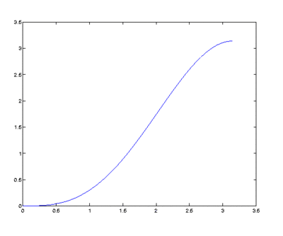
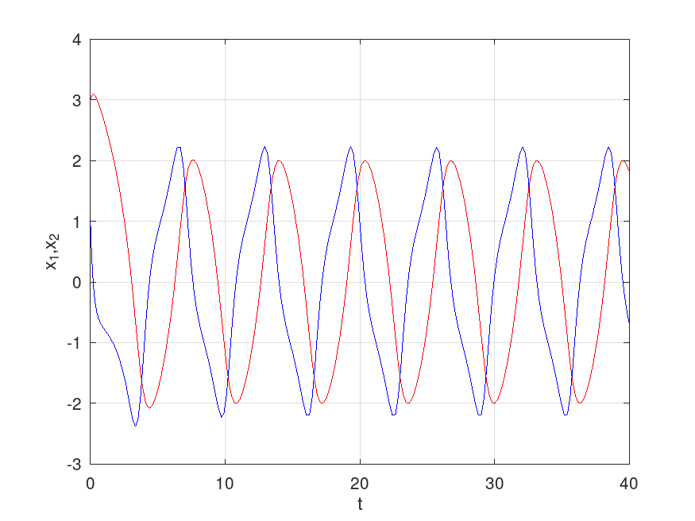
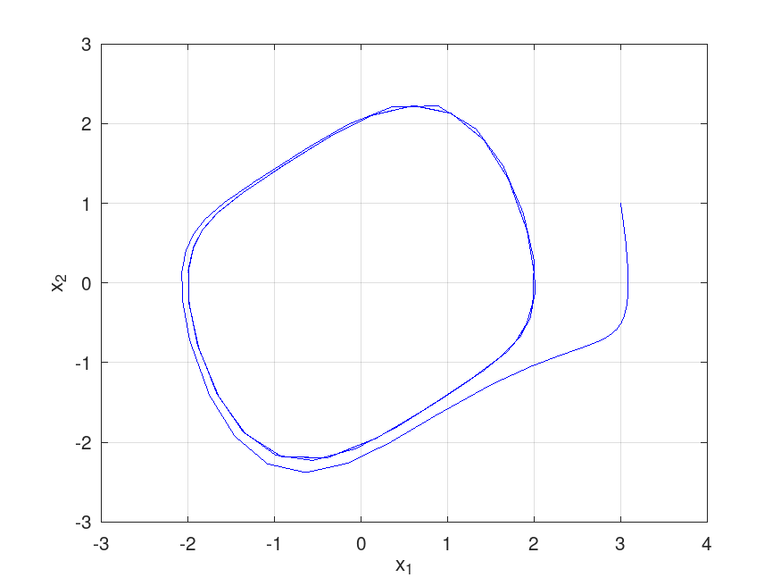
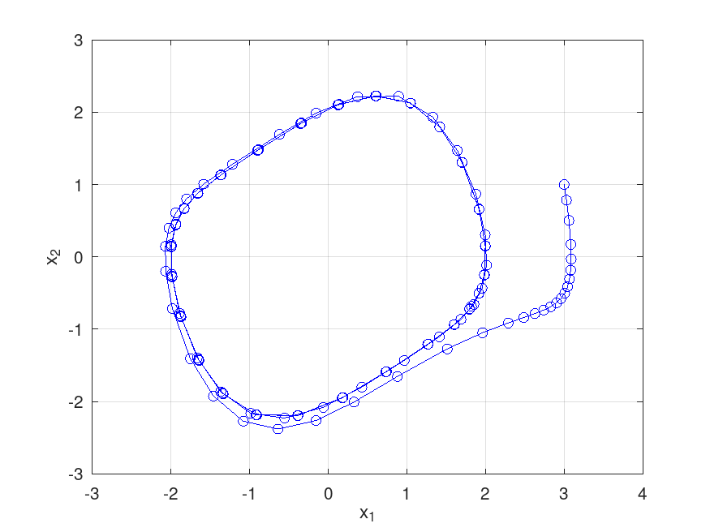
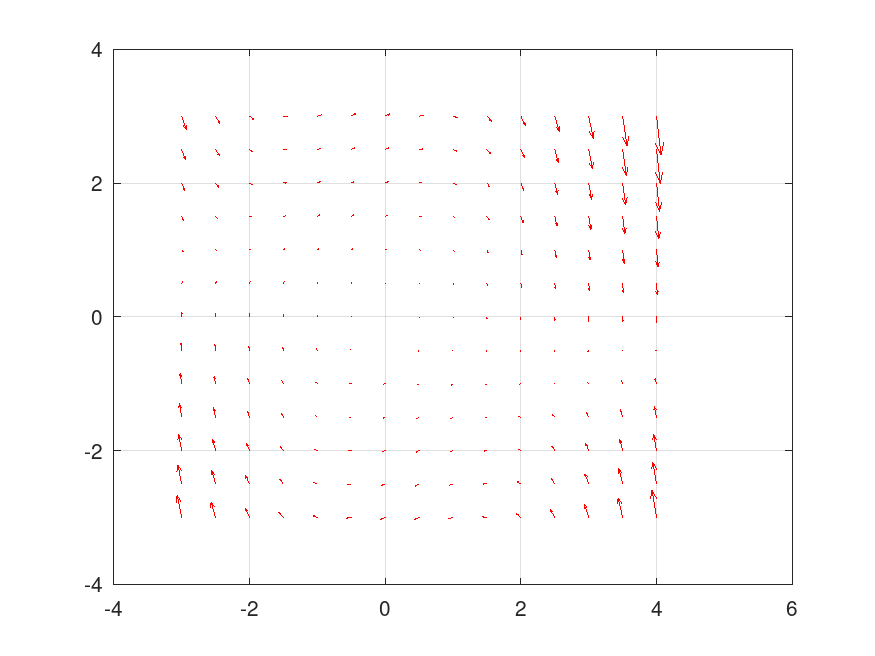
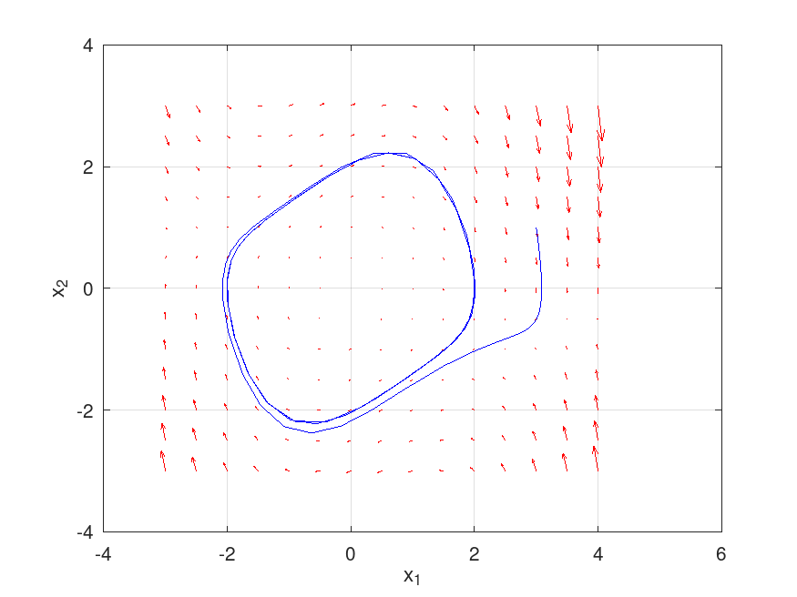
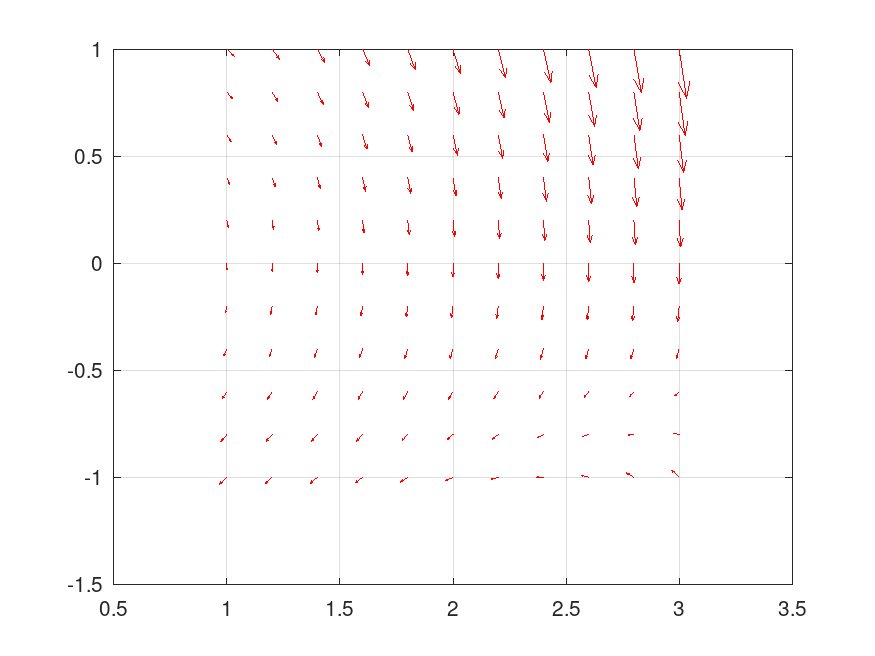

Numerical Computations
This document illustrates a tinny portion of the types of numerical computations that can be done with Matlab. The basic version of Matlab does not have zillion of built-in functions. The developers of Matlab assume that users will define the functions that they need. Thus, programming in Matlab is essential. There are however a lot of toolboxes on all kinds of topics. These toolboxes are added to the basic installation of Matlab and greatly expand the choice of functions. We will not cover the toolboxes in our introduction to Matlab. One of the main reasons is that each toolbox has to be purchased separately. That can be expensive.
Numerical Integration
There are two fundamental Matlab functions to numerically integrate a function: trapz and integral (with integral2 and integral3 for the integrals over subsets of \(\mathbb{R}^2\) and \(\mathbb{R}^3\) respectively). The function trapz uses the Trapezoidal method to approximate the integral of a function.
Example: We use the trapezoidal method to approximate the area under the curve \(y = x \sin(x)\) for \(0 < x < \pi\) with \(10\) subintervals. We use the \(11\) equally spaced points given in the following list.
>> x = linspace(0,pi,11)
x =
Columns 1 through 7
0 0.3142 0.6283 0.9425 1.2566 1.5708 1.8850
Columns 8 through 11
2.1991 2.5133 2.8274 3.1416
The next step is to evaluate \(x \sin(x)\) at each of the components of the list x (the components of x are the mesh points of the interval \([0.\pi]\).)
>> y = x .* sin(x);
The sum of the trapezoidal method is computed with the following command
>> trapz(x,y)
ans =
3.1157
The function integral is based on an adaptive quadrature method. To be able to use this function, we need to define new functions using m-files or to define anonymous functions.
Example: To approximate the area under the curve \(y = x \sin(x)\) for \(0 \leq x \leq \pi\), we use the function funct1 that we have defined in the document . To evaluate numerically the integral of \(x \sin(x)\) over the interval \(0 \leq x \leq \pi\), we only have to execute the following command.
>> integral(@funct1,0,pi) ans =
3.1416
The basic format of the function integral is
where Funct is the name of a function defined for \(a \leq x \leq b\), the interval of integration. For instance, to specify the upper bound on the relative error or the absolute error, it suffices to use a command like integral(@Funct,a,b,'RelTol',value1,'AbsTol',value2) where value1 is the new upper bound on the relative error and value2 is the new upper bound on the absolute error.
Example: We want to approximate the value of the integral of \(\displaystyle f(x) = \sqrt{x} + 2 \sin(1/x^2) + 1\) for \(1 \leq x \leq 5\).
Instead of creating an m-file for the function \(f\), we define an anonymous function which is only represented by its handle that we store in a variable as it follows.
>> f = @(x) sqrt(x) + sin(1./x.^2) + 1
f =
@(x) sqrt(x) + sin(1 ./ x .^ 2) + 1
This function handle can then be used with the function integral. The following command illustrates how to do it. We require a relative error of no more than \(10^{-6}\).
>> integral(f,1,5,'RelTol',10^(-6))
ans =
11.55448141551789
Example: We want to approximate the value of the integral of \(\displaystyle f(x,y) = x^2 y^2\) over the disk of radius 2 centred at the origin.
First method: We first compute the integral
\[ \int_{-2}^2 \int_{-\sqrt{4-x^2}}^{\sqrt{4-x^2}} f(x,y) \text{d} y \text{d} x \ . \]To compute this integral using Matlab, we execute the following commands.
>> format long; ... f = @(x,y) x.^2 .* y.^2; ... ymax = @(x) sqrt(4-x.^2); ... ymin = @(x) -sqrt(4-x.^2); ... integral2(f, -2,2, ymin, ymax,'Method','iterated') ans =
8.377580360000902
Second method: We compute the previous integral using polar coordinates. Namely, we set \(x = r \cos(\theta)\) and \(y = r \sin(\theta)\) for \(0 \leq r \leq 2\) and \(0 \leq \theta \leq 2\pi \), and compute the integral
\[ \int_0^2 \int_0^{2\pi} f(r\cos(\theta),r\sin(\theta)) r \text{d} \theta \text{d} r \ . \]To compute this integral using Matlab, we execute the following commands.
>> X = @(r,theta) r.*cos(theta); ... Y = @(r,theta) r.*sin(theta); ... frt = @(r,theta) f(X(r,theta),Y(r,theta)); ... frtD = @(r,theta) f(X(r,theta),Y(r,theta)).*r; ... integral2(frtD, 0,2, 0, 2*pi,'Method','tiled') ans =
8.377580409572781
There are three options for the
property Method: tiny rectangles
as it is done for the definition of
the integral of fonctions of two or more variables. We select the
option iterated when we want the integral to be computed as a
double or triple integral.
Ordinary Differential Equations (ODE)
Three of the Matlab functions to solve first order (systems of) ODE are ode23, ode45 and ode113. They are variable step size methods based on Runge-Kutta methods. They are parts of the family of ODE solvers for Matlab. To get help about an ODE solver and/or to get a list of the other ODE solvers in Matlab, it suffices to execute the command help ode23 for instance. The function name ode23 can be replaced by any other Matlab ODE solver name.
Only the procedure to use the ODE solver ode45 will be explained below. However, the procedure to use the other solvers is similar.
The systems of ODE that we consider are of the form \(\vec{x}'(t) = f(t,\vec{x}(t))\) where \(\displaystyle f:\mathbb{R}\times \mathbb{R}^n \to \mathbb{R}^n\) is a continuous function which is locally Lipshitz with respect to the variable \(\vec{x}\). The theory asserts that, for a given initial condition \(\vec{x}_0\), there always exists a unique solution \(\displaystyle \vec{x}:I \to \mathbb{R}^n\) of the system of ODE such that \(\vec{x}(0) = \vec{x}_0\) where \(I\) is an open interval containing \(0\). If \(f\) does not depend of \(t\), then we say that the system of ODE is autonomous. In this case, if \(\displaystyle \vec{x}:I \to \mathbb{R}^n\) is a solution of the system of ODE, then \(f(\vec{x}(t))\) gives the direction and velocity of this solution at the point \(\vec{x}(t)\). In particular, \(f(\vec{x}(t))\) is tangent to the orbit \( \{\vec{x}(t) : t \in I\} \) at the point \(\vec{x}(t)\).
The format of the ODE solver ode45 is [t,x] = ode45(@f ,[t_zero , t_final], x0, options) .
The function f is the right hand side of the ODE \(\vec{x}'(t) = f(t,\vec{x}(t))\). The value t_zero is the initial time and the value t_final is when to stop the numerical integration. The expression x0 is a column vector representing an initial condition at t_zero.
The column vector t and the matrix x returned by ode45 have the same number of rows. The number of columns of the matrix x is equal to the length of the column vector x0. The ithx lists the values of \(x_i\), the ith component of the solution, at all the values of \(t\) listed in the column vector t.
If we have a one dimensional ODE (i.e \(n = 1\)), then x0 can be a row vector representing several initial conditions at t_zero. In this situation, ode45 computes the numerical solution for each of these initial conditions. The ith column of x lists the values of the solution associated to the ith initial condition in x0 at all the values of \(t\) listed in the column vector t.
Many options can be given to the Matlab ODE solvers. For instance, to provide the solver with a bound on the relative tolerance and a bound on the absolute tolerance, we have to first define a structure of options like the following one.
>> option = odeset('reltol', 10^(-6), 'abstol', 10^(-5))
Only bounds on the relative tolerance and absolute tolerance have been included in the previous example but there are many more options that can be included according to the ODE solver used.
Example: We use the solver ode45 to approximate the solution of \(x'(t) = f(t,x) = x \sin(x)\) for \(0 \leq t \leq \pi\). The initial condition is \(x(0) = 1\) and the upper bound on the relative tolerance is \(\displaystyle 10^{-5}\). We have already defined in the m-file funct1.m a function \(x \mapsto x \sin(x) \). However, this function funct1 cannot be used with the ODE solver ode45 because the function funct1 depends only of \(x\). The right hand side of an ODE \(x'(t)=\ldots\) must be a function of \(t\) and \(x\).
The function funct1 is modified to get the new function funct2 defined in the file funct2.m. The m-file contains the following code:
% xp = funct2(t,x) % % This function takes two arguments, t and x, and returns the % result of the computation x sin(x) function xp = funct2(t,x) xp = x.*sin(x); end
The only option given to the solver ode45 is the upper bound \(\displaystyle 10^{-5}\) for the relative tolerance.
>> options = odeset('reltol',10^(-5));
Finally, we can use the solver ode45 to numerically solve the ODE \(x' = f(t,x)\) for \(0 \leq t\leq \pi\) with the initial condition \(x(0) = 1\).
>> [t,x] = ode45('funct2',[0,pi],1,options);
>> size(t), size(x)
ans =
17 1
ans =
17 1
It is not wise to list all the values of [t,x] because of the possible large number of values returned by the solver. It is better to graph the linear interpolation of the solution using the data provided by [t,x].
>> plot(t,x); ...
grid on, xlabel('t'), ylabel('x')

Using linear interpolation at the data given in [xx,yy], we can approximate the solution of the ODE at any points of the interval \([0,\pi]\).
Example: An approximated value of the solution of the previous ODE at \(t = 2\) is given by the command
>> w = interp1(t,x,2,'linear')
w =
3.1025
Example: A famous second order ODE is the van der Pol equation \(x''(t) - \mu (1 - x(t)^2) x'(t) + x(t) = 0\). If we pose \(x_1 = x\) and \(x_2 = x'\), we get the following system of first order ODE.
\[ \begin{split} x_1'(t) &= x_2(t) \\ x_2'(t) &= \mu (1-x_1(t)^2) x_2(t) - x_1(t) \end{split} \]This is a simple model for an oscillating system with a non-linear damping represented by \(\mu (1-x_1(t)^2) x_2(t)\). From a purely mathematical point of view, this system of ODE is really interesting. The van der Pol equation is included in basically all textbooks on ODE.
For \(\mu = 0\), all the solutions are periodic. In fact, the solutions are of the form
\[ \begin{pmatrix} x_1(t) \\ x_2(t) \end{pmatrix} = \text{exp}\left( t\begin{pmatrix} 0 & 1 \\ -1 & 0 \end{pmatrix}\right) \begin{pmatrix} a \\ b \end{pmatrix} = \begin{pmatrix} \cos(t) & \sin(t) \\ -\sin(t) & \cos(t) \end{pmatrix} \begin{pmatrix} a \\ b \end{pmatrix} \]where \(\displaystyle \begin{pmatrix} x_1(0) \\ x_2(0) \end{pmatrix} = \begin{pmatrix} a \\ b \end{pmatrix}\) is the initial condition.
For \(\mu > 0\), the dynamic of the system of ODE is very interesting.
There exists only one attracting periodic solution. Except for the
trivial solution given by
\(\displaystyle \begin{pmatrix} x_1(t) \\ x_2(t) \end{pmatrix}
= \begin{pmatrix} 0 \\ 0 \end{pmatrix}\) for all \(t\), all the other
solutions converge
toward the periodic solution.
We use Matlab to study the van der Pol equation. We solve the system of ODE for \(\mu = 0.5\) and \(\displaystyle \begin{pmatrix} x_1(0) \\ x_2(0) \end{pmatrix} = \begin{pmatrix} 3 \\ 1 \end{pmatrix}\), and plot the graphs of \(x_1\) and \(x_2\) in function of the time.
>> mu = 0.5; ...
x0 = [ 3 ; 1]; ...
F = @(t,x) [x(2), mu*(1-x(1).^2).*x(2) - x(1)]; ...
options = odeset('reltol',10^(-5)); ...
[t,x] = ode45(F,[0,40],x0,options); ...
plot(t,x(:,1),'r',t,x(:,2),'b'), ...
grid on, xlabel('t'), ylabel('x_1,x_2')

To get a better idea of the behaviour of the solution of the system of ODE with the initial condition \(\displaystyle \begin{pmatrix} x_1(0) \\ x_2(0) \end{pmatrix} = \begin{pmatrix} 3 \\ 1 \end{pmatrix}\), we plot the orbit \( \{ (x_1(t),x_2(t)) : t \geq 0 \} \).
>> plot(x(:,1),x(:,2),'b'), ...
grid on, xlabel('x_1'), ylabel('x_2')

We have that the solution with the initial condition \(\displaystyle \begin{pmatrix} x_1(0) \\ x_2(0) \end{pmatrix} = \begin{pmatrix} 3 \\ 1 \end{pmatrix}\) converges very rapidly to the periodic solution.
If we plot again the previous orbit bu using the format -ob, we get the following figure.
>> plot(x(:,1),x(:,2),'-ob'), ...
grid on, xlabel('x_1'), ylabel('x_2')

The circles indicate the location of the points on the orbit computed by ode45. There are more points in the section of the orbit where the solution varies rapidly and less points in the section where the solution varies more slowly. The speed and direction of the orbits is determined by the length and direction of the vectors in the vector field associated to the system of autonomous ODE \( \vec{x}' = f(\vec{x}) \). We remind the reader that a vector field associated to a system of autonomous ODE is generated as it follows. We select many (equally spaced) points \(\vec{x}\) in the plane and draw from each of these points \(\vec{x}\) a vector in the direction \(f(\vec{x})\). The vectors drawn are often of the same length but sometimes the length of the vector drawn is proportional to the norm of \(f(\vec{x})\). The function quiver of Matlab does exactly that.
It is traditional to draw the vector field associated to an autonomous system of ODE of the form \( \vec{x}' = f(\vec{x}) \) to get a qualitative picture of the global behaviour of the orbits of this system.
>> [X,Y]=meshgrid(-3:0.5:4,-3:0.5:3); ... U = Y; V = mu*(1-X.^2).*Y - X; ... quiver(X,Y,U,V,'r'), grid on

We can add the orbit associated to the initial condition \(\displaystyle \begin{pmatrix} x_1(0) \\ x_2(0) \end{pmatrix} = \begin{pmatrix} 3 \\ 1 \end{pmatrix}\) to the previous vector field.
>> hold on, ...
plot(x(:,1),x(:,2),'b'), ...
grid on, xlabel('x_1'), ylabel('x_2')

Unfortunately, there are large variations in the length of the vectors in the vector field. The length of the vectors is smaller near the centre of the plane but this is misleading because that are also large variations (at a smaller scale) in the length of the vectors near the periodic orbit as the following close up of the vector field shows.
>> [X,Y]=meshgrid(1:0.2:3,-1:0.2:1); ... U = Y; V = mu*(1-X.^2).*Y - X; ... quiver(X,Y,U,V,'r'), grid on

Studying a system of autonomous ODE with a vector field may requires a very careful analysis, in particular if the lengths of the vectors vary widely. We will write a program in the document to draw vector field where the vectors are all of the same length, and revisit the van der Pol equation using this program.